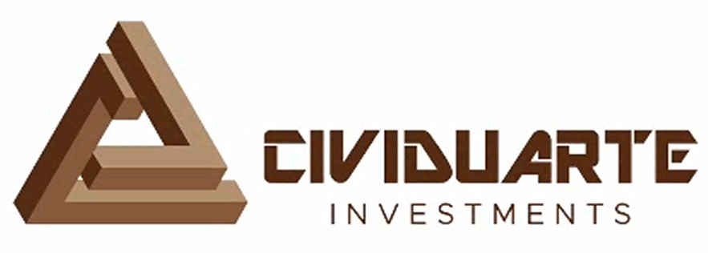

<style>
    .main-footer {
        background-color: #ffffff; /* Fundo branco */
        color: #333;
        padding: 40px 20px;
        border-top: 2px solid rgb(91,47,20); /* Linha fina a separar */
        font-family: 'Open Sans', sans-serif;
    }

    .footer-container {
        max-width: 1200px;
        margin: 0 auto;
        display: flex;
        flex-direction: column;
        align-items: center;
        gap: 30px;
    }

    /* Área dos Logotipos */
    .footer-logos {
        display: flex;
        justify-content: center;
        align-items: center;
        flex-wrap: wrap;
        gap: 40px;
        width: 100%;
    }

    .footer-logos img {
        height: 45px; /* Altura para os logos de financiamento */
        width: auto;
        display: block;
        object-fit: contain;
    }

    /* Logo da Empresa (Destaque ligeiro) */
    .footer-logos .logo-empresa {
        height: 55px;
    }

    /* Texto de Copyright */
    .footer-bottom {
        text-align: center;
        font-size: 11px;
        letter-spacing: 0.5px;
        color: #777;
        text-transform: uppercase;
    }

    /* Responsividade */
    @media (max-width: 768px) {
        .footer-logos {
            flex-direction: column;
            gap: 25px;
        }
        
        .footer-logos img {
            height: 35px;
        }

        .main-footer {
            padding: 30px 15px;
        }
    }
</style>

<footer class="main-footer">
    <div class="footer-container">
        <div class="footer-logos">
            
            
            
            
            
        </div>

        <div class="footer-bottom">
            <p style="color:rgb(91,47,20);">&copy; 2026 Cividuarte. Todos os direitos reservados.</p>
        </div>
    </div>
</footer>